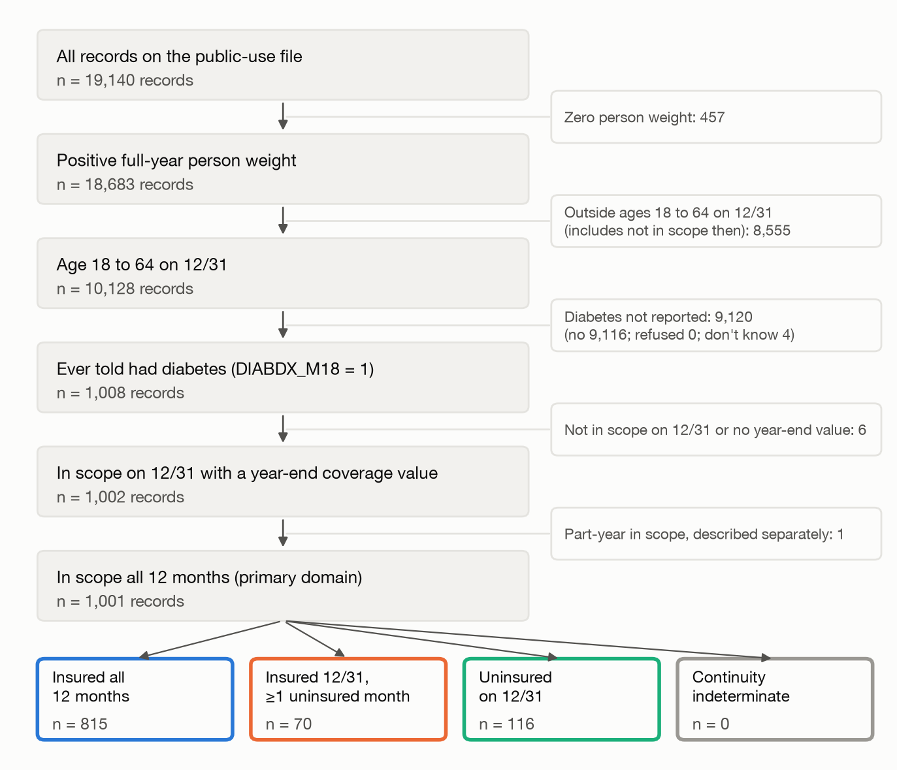
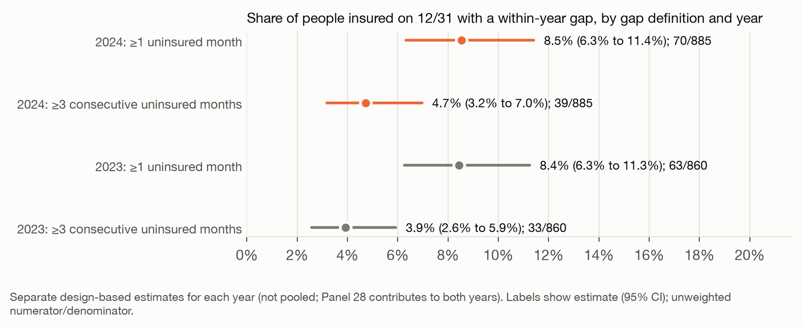
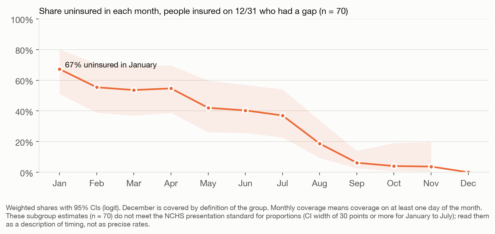
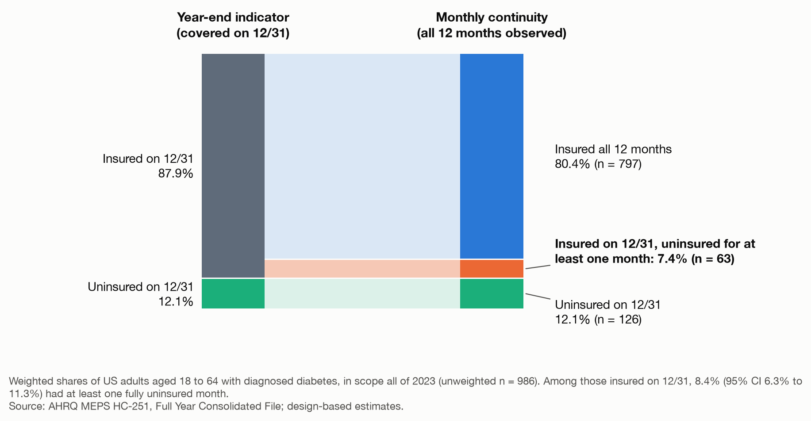

Insured on December 31, Uninsured Earlier in the Year: Within-Year Coverage Gaps and Prescription Spending Among US Adults With Diabetes
Draft report, posted for review and comment. It has not been peer reviewed.
Abstract
Background: Annual spending analyses often classify insurance by year-end status, although people insured on December 31 may have been uninsured earlier that year.
Objectives: To estimate how many adults with diabetes insured at year end had a fully uninsured month that year, and how prescription summaries change when monthly continuity is retained.
Research Design: Cross-sectional, design-based analysis of the 2024 Medical Expenditure Panel Survey Full Year Consolidated file, replicated in 2023.
Subjects: 1,001 adults aged 18 to 64 with diagnosed diabetes, in scope all year (16.6 million people).
Measures: Coverage on December 31; monthly continuity classes; prescription fills; out-of-pocket prescription spending.
Results: Among 885 adults insured on December 31, 8.5% (95% CI, 6.3% to 11.4%) had at least 1 uninsured month (about 1.24 million people) and 4.7% had 3 or more consecutive uninsured months; the 2023 estimate was 8.4%. Compared with the continuously insured, those with a gap less often filled any prescription (78.8% vs 92.6%) and had fewer fills (20.1 vs 30.4). Median out-of-pocket spending among users was similar ($154 vs $152); lower mean spending with a gap ($240 vs $642) partly reflected a few very large amounts among the continuously insured. Pooled year-end summaries changed little (mean $608 vs $642), and adjusted spending differences were imprecise and reversed direction between years.
Conclusions: About 1 in 12 adults with diabetes counted as insured at year end had a coverage gap that year. Adults with gaps reported lower prescription use, while pooled spending summaries changed little.
Key Words: health insurance; coverage continuity; diabetes mellitus; prescription drugs; Medical Expenditure Panel Survey
Introduction
Surveys measure health insurance over different reference periods: on the interview date, on a fixed date such as December 31, at any time in a year, or in each month. Estimates of the uninsured depend heavily on that choice. In the Medical Expenditure Panel Survey (MEPS), 25.2% of people younger than 65 were uninsured at some point in 2011 but 14.5% for the entire year,1 and in 2013 the corresponding figures were 27.1% and 15.6%.2 Panel data show that point-in-time counts understate how many people experience a gap over time,3 and even within a single instrument a calendar-year question and a point-in-time question give different answers.4
The reference period matters when coverage is used to group people for an analysis of annual outcomes. Annual prescription use and spending accumulate month by month, but a year-end indicator records only the last day. MEPS releases both kinds of measure, a December 31 indicator and monthly indicators for every source of coverage,5 so the size of the mismatch can be measured directly.
Coverage continuity is a particular concern for people with diabetes, whose treatment depends on regular refills. In community health centers, patients with diabetes churned more often than patients without diabetes,6 and the share with hemoglobin A1c above 9.0% changed less favorably after churn than among matched patients without churn.7 In a 2015 survey of low-income adults in 3 states, coverage changes that included an uninsured gap were associated with skipping medications because of cost, while changes without a gap were not, although those were linked to other problems such as changing doctors.8 Among insulin users younger than 65 who were adequately insured, 14.3% rationed insulin because of cost.9
Earlier studies, many using MEPS, link part-year uninsurance to lower use of care. In 2016, 18.2% of adults aged 18 to 64 with at least 1 diagnosed chronic condition, a group that included diabetes, were uninsured for at least 1 month,10 compared with 7.8% uninsured all year.11 In 2002 to 2004, about 40% of working-age adults with part-year uninsurance gained coverage and kept it through the end of the year, and adults with chronic conditions who had short gaps filled fewer prescriptions than those insured all year.12 MEPS monthly data have also been used to track part-year coverage and access13 and multiyear coverage patterns.14 In 2021 to 2022, 25.3% of nonelderly adults in MEPS had a coverage discontinuity, and those with discontinuities were less likely than adults with continuous private coverage to receive any prescriptions.15 Medicaid churning among low-income adults has also been compared before and after the Affordable Care Act.16
Two recent MEPS studies of diabetes costs and medication use classified coverage over the whole year. One treated only people uninsured all year as uninsured and assigned everyone else to the coverage type held longest,17 and the other assigned the payer held for at least 7 months and excluded the uninsured,18 so within-year gaps sit inside the insured groups.
No study identified in a literature search (Supplemental Digital Content 1, Text, Section S1.8, search methods) reports the share of adults with diabetes who were insured on December 31 but uninsured earlier in the same year, or shows how annual prescription summaries change when those people are separated out. This study gives that estimate for 2024, the most recent MEPS full-year file, with a 2023 replication. It also provides a reusable classification of monthly coverage that keeps out-of-scope and missing months separate from uninsured months. This descriptive study measures what a year-end indicator omits for this population. It does not estimate the effects of coverage gaps.
Methods
Data
MEPS Household Component data, released by the Agency for Healthcare Research and Quality (AHRQ), come from a nationally representative panel survey of the US civilian noninstitutionalized population. The 2024 Full Year Consolidated file (HC-256, released August 2026) contains 19,140 person records from Panel 28 rounds 3 to 5 and Panel 29 rounds 1 to 3, of whom 18,683 have a positive full-year weight.5 Fill-level imputation flags came from the 2024 Prescribed Medicines file (HC-254A).19 The replication used the 2023 file (HC-251).20 An analysis plan with prespecified estimands, denominators, and robustness checks was written and dated before any data were tabulated; the 8 later amendments, none of which changed an estimand, are listed in Supplemental Digital Content 1, Text, Section S1.7 (amendments).
Study Population
The population was adults aged 18 to 64 on December 31, 2024, who reported ever being told by a doctor or other health professional that they had diabetes, excluding gestational diabetes. Responses of refused or don't know were not treated as no. The primary domain required a positive person weight, scope on December 31, and scope in all 12 months. MEPS codes monthly coverage as inapplicable in months a person was outside the civilian noninstitutionalized population, so a month was in scope when it carried a coverage value. The person's 2024 reference period also had to end in December. Of the 1,002 adults with diabetes in scope on December 31, 1,001 met these conditions; the remaining person is described in Supplemental Digital Content 1, Text, Section S1.2 (scope rule).
Coverage Measures
Year-end status was the MEPS indicator of coverage on December 31, 2024. Monthly coverage used the edited indicators of any hospital or physician coverage in each month from Medicare, Medicaid or the Children's Health Insurance Program, TRICARE or the Civilian Health and Medical Program of the Department of Veterans Affairs, Veterans Affairs care, other public programs, or private insurance including Medigap. Indian Health Service coverage alone is not counted as insurance. MEPS counts a month as covered if coverage applied on any day of it.5
Each person was assigned to 1 of 4 classes: (A) insured on December 31 and in every month; (B) insured on December 31 with at least 1 uninsured month; (C) uninsured on December 31; and (D) indeterminate, when the year-end value was unusable, or when a person insured on December 31 had no observed uninsured month but at least 1 month without usable information.
Missing and out-of-scope months were never counted as uninsured. Coverage from 2 sources in the same month counted once, and a change of coverage source without an uninsured month was not a gap; changes between private insurers cannot be identified in the public-use file. Uninsured months were counted within calendar year 2024, so a gap that began in 2023 counts only from January. The prespecified alternative definition required at least 3 consecutive uninsured months, following the statutory short coverage gap of less than 3 months.21
Classification was implemented as a reusable function that accepts any set of monthly indicators and code lists and returns each person's class with an audit table of rule counts. Monthly data were reshaped into a person-month table with structured query language (SQL) queries and reconciled with the annual MEPS indicators on their documented definitions before use (Supplemental Digital Content 1, Text, Section S1.4, reconciliation checks).
Prescription Measures
Outcomes were any prescription fill in 2024, the number of fills including refills, and self or family out-of-pocket payments for all prescribed medicines, in nominal 2024 dollars. These cover all prescriptions and the diabetic supplies recorded in the MEPS prescribed medicines component, not only glucose-lowering drugs. No recorded fill, fills with zero out-of-pocket payment, and missing expenditure were kept as separate states. Total payments from all sources gave context. MEPS imputes missing payments,5 so the share of fills with fully or partially imputed payments was summarized from fill-level flags.19 Out-of-pocket spending describes payments made; it does not measure affordability, unmet need, or access to every prescribed treatment.
Statistical Analysis
Estimates used R version 4.5.1 (R Foundation for Statistical Computing, Vienna, Austria) with the survey package version 4.5,22 with Taylor series linearization, the full-year weight, variance strata, and primary sampling units. The full file stayed in the design and domains were taken as subsets, so variance estimation used all 105 strata and 264 primary sampling units in 2024 (262 in 2023). No stratum had a single primary sampling unit in the full file. Proportions have logit-transformed 95% confidence intervals (CIs). Proportions were flagged with the National Center for Health Statistics presentation standards using Korn-Graubard intervals23; estimates that met the standard but called for review (fewer than 8 design degrees of freedom, or a complementary proportion that would not meet it) are marked.
Means and quantiles were flagged when the relative standard error exceeded 30% or could not be estimated, or when the group had fewer than 30 people. Medians and 90th percentiles used survey quantiles with Woodruff intervals.24 Differences between classes in any fill, number of fills, and mean spending are design-based contrasts. A post hoc diagnostic described how concentrated out-of-pocket spending was.
Summaries are shown 2 ways: on a common denominator, the primary domain split by class, and on classification-specific denominators, year-end status among everyone in scope on December 31. This keeps differences in scope or missing information from being read as coverage effects.
A prespecified adjustment set (age group, sex, race and ethnicity, and family income below or above 200% of the federal poverty level) was used to standardize out-of-pocket spending across classes A, B, and C with a two-part model: a survey-weighted logistic model for any out-of-pocket spending and a gamma model with log link for positive amounts. Standardized means set every domain member to each class in turn. Uncertainty came from jackknife replicate weights built from the design (264 in 2024 and 262 in 2023), refitting both parts in every replicate. The model was fit only if a prespecified rule on event counts, positive spending observations, and design degrees of freedom was met; it was met in both years. No stepwise selection was used, and the model is descriptive.
Three robustness checks were prespecified: a common complete-information domain, the 3-consecutive-month gap definition, and a replication in 2023 with definitions verified separately against that file's documentation. Years were not pooled and were not tested against each other, because Panel 28 contributes to both.
Validation
Synthetic-record tests covered reshaping, overlapping coverage sources, missing and out-of-scope months, gaps before December coverage, source changes without gaps, expenditure states, and unchanged person counts. All 28 source reconciliation checks passed. In both years, the person-month table reproduced the annual MEPS uninsured and coverage indicators for every record, and weighted frequencies matched the AHRQ codebook. In 2024, fill counts and out-of-pocket sums from the prescribed medicines file matched every person's reported totals.
In 4 software cross-checks, a separately written SQL classification agreed on class and uninsured-month counts for every record in both years. A separate Taylor variance calculation reproduced the primary estimate and its standard error. Rerunning the pipeline from cached files reproduced every numeric output.
I confirmed the AHRQ file checksums and recomputed cohort counts, class counts, and the primary proportion and standard error in a separate script. I also checked the monthly coverage sequences of 25 randomly sampled domain members against their assigned classes and checked every reported number against the outputs. I reread each cited study, in full text where available and as an abstract otherwise, to confirm the statements attributed to it.
Ethics
This study was a secondary analysis of publicly available, deidentified MEPS public-use files released by AHRQ. No participants were recruited, there was no contact with survey respondents, and no identifiable private information was accessed. No institutional review board approval or exemption determination was sought.
Results
The 2024 file contained 19,140 records; 1,008 were adults aged 18 to 64 with a positive weight and diagnosed diabetes, and 1,001 formed the primary domain (Supplemental Digital Content 1, Figure S1, cohort flow). Monthly coverage had no missing values in the domain, so no one was classified as indeterminate. Table 1 shows characteristics by class.
Year-End Status Versus Monthly Continuity

Figure 1. The same adults classified by year-end coverage (left) and by monthly continuity (right). Weighted shares; labels give unweighted counts.
By the year-end indicator, 87.9% of adults with diabetes were insured (Figure 1). Monthly data split that group: 80.4% of the domain were insured in every month (class A), 7.5% were insured on December 31 after at least 1 uninsured month (class B), and 12.1% were uninsured on December 31 (class C). Among the 885 adults insured on December 31, 70 had a gap, a weighted 8.5% (95% CI, 6.3% to 11.4%; design effect 1.84), or about 1.24 million people. Under the 3-consecutive-month definition, the share was 4.7% (95% CI, 3.2% to 7.0%).
People in class B averaged 3.8 uninsured months within 2024 (95% CI, 3.0 to 4.7). About two thirds of class B (63.7%; 95% CI, 45.4% to 78.7%) were uninsured in January and insured from a later month through December; this subgroup estimate does not meet the presentation standard and describes timing only (Supplemental Digital Content 1, Figure S3, monthly uninsured shares in class B). Changes in the categories of coverage held, such as gaining or losing Medicaid or private coverage, without an uninsured month were also common: 10.4% of class A had one (95% CI, 8.2% to 13.0%). In month-to-month transitions, 6.6% of uninsured person-months were followed by a covered month.
Prescription Use and Spending

Figure 2. Annual out-of-pocket prescription spending by class, 2024 dollars, with 95% CIs.
Class B used fewer prescriptions than class A (Table 2, Figure 2). Any fill was less common in class B (78.8% vs 92.6%; difference −13.8 percentage points, 95% CI, −26.4 to −1.2; the class B proportion is marked for review in Table 2), and class B had fewer fills (20.1 vs 30.4; difference −10.3, 95% CI, −17.4 to −3.2). Unadjusted mean out-of-pocket spending including zeros was lower in class B ($240 vs $642; difference −$403, 95% CI, −$802 to −$4), while median spending among users was similar ($154 vs $152). The difference in means partly reflected a few very large amounts. In the post hoc diagnostic, the top 1% of the domain accounted for 42% of out-of-pocket dollars, and the largest annual amount, $91,626, was in class A; excluding that top 1%, mean spending was $383 in class A and $240 in class B. Class C had the lowest use (73.1% with any fill) and a mean of $845, an estimate flagged as imprecise.
Because class B is small, the year-end insured group looked much like class A. Its mean out-of-pocket spending was $608 versus $642 for class A, any fill 91.4% versus 92.6%, and mean fills 29.5 versus 30.4. The classification-specific year-end summaries were nearly identical to the common-denominator ones because only 1 person was in scope on December 31 for part of the year.
Imputed payments were common in every class. Among users, 90.1% in class A and 90.1% in class B had at least 1 fill with fully or partially imputed payments; the class B estimate rests on fewer than 8 design degrees of freedom (Supplemental Digital Content 1, Table S6, imputation information).
Adjusted Comparison and Robustness
After standardization, mean out-of-pocket spending was $590 in class A and $352 in class B (difference −$238; 95% CI, −$536 to $59) (Table 3). In 2023 the difference was $105 (95% CI, −$215 to $425). The share of year-end insured adults with a gap was 8.4% in 2023 (95% CI, 6.3% to 11.3%), and 3.9% under the 3-month definition. In 2023, class B again less often filled any prescription than class A (difference −10.0 percentage points; 95% CI, −19.4 to −0.5), and the unadjusted mean spending difference was −$21 (95% CI, −$217 to $176).
Discussion
About 1 in 12 working-age adults with diabetes who were insured on December 31, 2024, had spent at least 1 full month of that year without coverage, and about 1 in 20 had a gap of 3 months or more. The estimate was nearly the same in 2023. People with a gap filled fewer prescriptions and were less likely to fill any. Their median out-of-pocket spending was similar to that of the continuously insured, and their lower mean spending in 2024 partly reflected a few very large amounts in the continuously insured group. Because they are a small share of the insured, separating them out barely changed pooled summaries for the year-end insured.
These results fit earlier MEPS evidence. The 2016 AHRQ estimates for adults with chronic conditions imply that roughly 10 percentage points were uninsured for part of the year but not all of it,10,11 and the 2024 estimate here isolates the part of such a group that a year-end indicator records as insured. Gulley and colleagues found that adults with chronic conditions who had short gaps filled fewer prescriptions,12 and class B showed a similar pattern in 2024. Wang and colleagues reported that limiting their public and private insurance groups to adults covered all year lowered the high out-of-pocket cost rate only slightly (within 1%) and did not change trends17; the comparison of pooled year-end summaries here points the same way for person-level prescription spending. Multiyear MEPS typologies and studies of Medicaid churning describe instability over longer windows or in specific programs14-16,25; none of them crosses year-end status with monthly continuity among adults with diabetes, which is the contrast reported here.
For analysts, the choice of coverage measure depends on the question. When the aim is to describe annual spending for insured adults with diabetes, a year-end indicator loses little, at least at the level of means and medians in 2024 and 2023. For questions about prescription use, a year-end indicator combines people who had a gap with those continuously insured. About 1 in 12 of the year-end insured had a gap in these data. The lower use in class B could reflect forgone or deferred care. Coverage gaps have been associated with skipping medications because of cost,8 adults who lost Medicaid deferred office-based care until they were insured again,25 and longer gaps have been followed by later cost-related barriers to care,26 but these data cannot separate that from differences in health or need. Lower spending in a group with less use should not be read as better financial protection.26
The classification function can be reused in other analyses. An AHRQ MEPS workshop program counts uninsured months but treats people whose months are all out of scope as fully insured and does not anchor the count to year-end status.27 The function used here keeps out-of-scope and missing months apart from uninsured months, reports an explicit indeterminate class, and produces an audit table, so the same rules can be applied to other years, populations, or enrollment files.
Limitations
Coverage is self-reported in interview rounds and edited by AHRQ. Estimates of coverage dynamics depend on the survey instrument,28 and self-reported Medicaid enrollment may lag true enrollment.25 Monthly indicators count a month as covered if any day was covered, so gaps shorter than a month, or inside a partly covered month, are invisible, and the estimate is a lower bound on people with any uninsured day. Uninsured months were counted within the calendar year, so gaps that began in the previous year are truncated at January; the mean number of uninsured months and the 3-consecutive-month estimate are therefore lower bounds. The year-end indicator and the December monthly indicator come from the same interviews, so the contrast is between reference periods rather than independent measurements.
Diabetes is self-reported ever-diagnosed. The prescription outcome covers all medicines, not only diabetes treatment, and includes imputed payments. Class B is small (n = 70), many of its subgroup estimates are imprecise, and adjusted spending differences reversed direction between years. Out-of-pocket means were dominated by a few very large amounts.
The cross-sectional design supports description only. Results apply to the US civilian noninstitutionalized population, not to institutionalized people.
Conclusions
A year-end coverage indicator counts about 1 in 12 working-age adults with diabetes as insured even though they went without coverage for at least 1 month that year. Separating these groups revealed differences in prescription use while changing pooled spending summaries little in 2023 and 2024. Studies that stratify annual outcomes by coverage can retain monthly continuity with the classification provided here.
References
- Chu MC. The Uninsured in America, 1996-2012: Estimates for the U.S. Civilian Noninstitutionalized Population under Age 65. Statistical Brief #420. Agency for Healthcare Research and Quality; August 2013. Accessed October 7, 2026. https://meps.ahrq.gov/data_files/publications/st420/stat420.pdf
- Rhoades JA. Spells of Uninsurance: Estimates for the U.S. Civilian Noninstitutionalized Population under Age 65, 2013. Statistical Brief #476. Agency for Healthcare Research and Quality; June 2015. Accessed October 7, 2026. https://meps.ahrq.gov/data_files/publications/st476/stat476.pdf
- Short PF, Graefe DR, Swartz K, et al. New estimates of gaps and transitions in health insurance. Med Care Res Rev. 2012;69(6):721-736. doi:10.1177/1077558712454195
- Pascale J, Boudreaux M, King R. Understanding the new Current Population Survey health insurance questions. Health Serv Res. 2016;51(1):240-261. doi:10.1111/1475-6773.12312
- Agency for Healthcare Research and Quality. MEPS HC-256: 2024 Full Year Consolidated Data File. Agency for Healthcare Research and Quality; August 2026. Accessed October 7, 2026. https://meps.ahrq.gov/mepsweb/data_stats/download_data_files_detail.jsp?cboPufNumber=HC-256
- Lester L, Dinh D, Larson AE, et al. Insurance instability among community-based health center patients with diabetes post-Affordable Care Act Medicaid expansion. J Am Board Fam Med. 2025;38(1):154-164. doi:10.3122/jabfm.2024.240186R1
- Huguet N, Dinh D, Larson A, et al. Insurance churn and diabetes outcomes among patients with low income. JAMA Health Forum. 2026;7(3):e260034. doi:10.1001/jamahealthforum.2026.0034
- Sommers BD, Gourevitch R, Maylone B, et al. Insurance churning rates for low-income adults under health reform: lower than expected but still harmful for many. Health Aff (Millwood). 2016;35(10):1816-1824. doi:10.1377/hlthaff.2016.0455
- Fang M, Selvin E. Cost-related insulin rationing in US adults younger than 65 years with diabetes. JAMA. 2023;329(19):1700-1702. doi:10.1001/jama.2023.5747
- Keenan PS, Vistnes J. Non-Elderly Adults Ever Uninsured During the Calendar Year, 2013-2016. Research Findings #42. Agency for Healthcare Research and Quality; June 2019. Accessed October 7, 2026. https://meps.ahrq.gov/data_files/publications/rf42/rf42.pdf
- Vistnes J, Keenan P. Uninsured All Year, 2013-2016: Estimates for Non-Elderly Adults by Selected Population Sub-groups and State Medicaid Expansion Status. Research Findings #40. Agency for Healthcare Research and Quality; January 2019. Accessed October 7, 2026. https://meps.ahrq.gov/data_files/publications/rf40/rf40.pdf
- Gulley SP, Rasch EK, Chan L. Ongoing coverage for ongoing care: access, utilization, and out-of-pocket spending among uninsured working-aged adults with chronic health care needs. Am J Public Health. 2011;101(2):368-375. doi:10.2105/AJPH.2010.191569
- Abdus S. Part-year coverage and access to care for nonelderly adults. Med Care. 2014;52(8):709-714. doi:10.1097/MLR.0000000000000167
- Gai Y, Jones K. Insurance patterns and instability from 2006 to 2016. BMC Health Serv Res. 2020;20(1):334. doi:10.1186/s12913-020-05226-1
- Mac Arthur NS, Abraham JM, Drew JAR, et al. Insurance coverage disruptions and associated access and utilization, 2008 to 2022. Med Care Res Rev. Published online October 1, 2026. doi:10.1177/10775587261484437
- Goldman AL, Sommers BD. Among low-income adults enrolled in Medicaid, churning decreased after the Affordable Care Act. Health Aff (Millwood). 2020;39(1):85-93. doi:10.1377/hlthaff.2019.00378
- Wang Y, Park J, Li R, et al. National trends in out-of-pocket costs among U.S. adults with diabetes aged 18–64 years: 2001–2017. Diabetes Care. 2021;44(11):2510-2517. doi:10.2337/dc20-2833
- Bepo L, Nguyen OK, Makam AN. Disparities in use of novel diabetes medications by insurance: a nationally representative cohort study. J Gen Intern Med. 2024;39(15):2987-2994. doi:10.1007/s11606-024-08961-x
- Agency for Healthcare Research and Quality. MEPS HC-254A: 2024 Prescribed Medicines File. Agency for Healthcare Research and Quality; July 2026. Accessed October 7, 2026. https://meps.ahrq.gov/mepsweb/data_stats/download_data_files_detail.jsp?cboPufNumber=HC-254A
- Agency for Healthcare Research and Quality. MEPS HC-251: 2023 Full Year Consolidated Data File. Agency for Healthcare Research and Quality; August 2025. Accessed October 7, 2026. https://meps.ahrq.gov/mepsweb/data_stats/download_data_files_detail.jsp?cboPufNumber=HC-251
- Requirement to maintain minimum essential coverage, 26 USC §5000A(e)(4) (2018). Accessed October 7, 2026. https://www.law.cornell.edu/uscode/text/26/5000A
- Lumley T. Analysis of complex survey samples. J Stat Softw. 2004;9(8):1-19. doi:10.18637/jss.v009.i08
- Parker JD, Talih M, Malec DJ, et al. National Center for Health Statistics data presentation standards for proportions. Vital Health Stat 2. 2017;(175):1-22. Accessed October 7, 2026. https://www.cdc.gov/nchs/data/series/sr_02/sr02_175.pdf
- Woodruff RS. Confidence intervals for medians and other position measures. J Am Stat Assoc. 1952;47(260):635-646. doi:10.1080/01621459.1952.10483443
- Roberts ET, Pollack CE. Does churning in Medicaid affect health care use? Med Care. 2016;54(5):483-489. doi:10.1097/MLR.0000000000000509
- Cao Y, Liu Z, Jiang M, et al. Duration of health insurance coverage gaps and subsequent cost-related barriers to care among adults aged 18–64 years with multimorbidity. Front Public Health. 2026;14:1965839. doi:10.3389/fpubh.2026.1965839
- Agency for Healthcare Research and Quality. HHS-AHRQ/MEPS workshop exercise 5b (SAS and Stata) [computer program]. GitHub repository, commit 02fbdd634959e97bd3584c3e9abdc62f84291d70; June 9, 2026. Accessed October 7, 2026. https://github.com/HHS-AHRQ/MEPS
- Graves JA, Mishra P. Health insurance dynamics: methodological considerations and a comparison of estimates from two surveys. Health Serv Res. 2016;51(5):1981-2001. doi:10.1111/1475-6773.12449
Tables
Table 1. Characteristics of adults aged 18 to 64 with diagnosed diabetes, by coverage continuity class, MEPS 2024
Weighted percentages (95% CI, logit). CI indicates confidence interval; MEPS, Medical Expenditure Panel Survey. Primary domain: in scope all 12 months. Class A, insured on December 31 and in all 12 months; class B, insured on December 31 with at least 1 uninsured month; class C, uninsured on December 31. † Does not meet the National Center for Health Statistics presentation standard for proportions.
| Characteristic | All | A. Insured all 12 months | B. Insured 12/31, gap | C. Uninsured 12/31 |
|---|---|---|---|---|
| Unweighted n | 1,001 | 815 | 70 | 116 |
| Age, y | ||||
| 18-44 | 26.0 (22.6 to 29.8) | 24.9 (21.3 to 29.0) | 28.8 (14.7 to 48.8) † | 31.7 (20.5 to 45.5) |
| 45-64 | 74.0 (70.2 to 77.4) | 75.1 (71.0 to 78.7) | 71.2 (51.2 to 85.3) † | 68.3 (54.5 to 79.5) |
| Sex | ||||
| Female | 49.3 (46.0 to 52.6) | 49.6 (46.0 to 53.3) | 56.6 (41.6 to 70.5) † | 42.6 (31.7 to 54.2) |
| Male | 50.7 (47.4 to 54.0) | 50.4 (46.7 to 54.0) | 43.4 (29.5 to 58.4) † | 57.4 (45.8 to 68.3) |
| Race and ethnicity | ||||
| Hispanic | 22.6 (18.8 to 26.9) | 19.4 (15.7 to 23.7) | 26.2 (13.5 to 44.7) † | 41.8 (30.1 to 54.4) |
| Non-Hispanic Black | 15.9 (13.0 to 19.4) | 16.8 (13.6 to 20.5) | 10.5 (4.7 to 21.7) † | 13.8 (7.1 to 25.2) † |
| Non-Hispanic White | 49.6 (45.1 to 54.1) | 52.4 (47.7 to 57.1) | 51.5 (35.3 to 67.4) † | 29.6 (18.3 to 44.1) |
| Non-Hispanic Asian, other, or multiple | 11.9 (9.3 to 15.0) | 11.4 (8.8 to 14.6) | 11.8 (4.5 to 27.8) † | 14.8 (7.4 to 27.4) † |
| Family income | ||||
| Below 200% of the federal poverty level | 33.5 (29.9 to 37.4) | 33.8 (29.7 to 38.1) | 36.7 (23.8 to 51.8) | 30.1 (20.3 to 42.1) |
| 200% of the federal poverty level or more | 66.5 (62.6 to 70.1) | 66.2 (61.9 to 70.3) | 63.3 (48.2 to 76.2) | 69.9 (57.9 to 79.7) |
| Census region | ||||
| Northeast | 14.9 (12.2 to 18.0) | 13.7 (10.9 to 17.0) | 19.4 (8.6 to 38.2) † | 20.0 (9.7 to 36.8) † |
| Midwest | 19.2 (16.2 to 22.5) | 21.4 (17.9 to 25.4) | 12.5 (4.5 to 30.4) † | 8.5 (3.7 to 18.4) † |
| South | 43.1 (38.9 to 47.4) | 42.7 (37.9 to 47.6) | 41.1 (26.2 to 57.8) † | 47.2 (32.9 to 61.9) † |
| West | 22.8 (19.2 to 26.9) | 22.2 (18.1 to 27.1) | 27.0 (15.0 to 43.7) † | 24.3 (13.5 to 39.8) |
Table 2. Annual prescription use and out-of-pocket spending by coverage representation, MEPS 2024
Estimates (95% CI). CI indicates confidence interval; MEPS, Medical Expenditure Panel Survey; OOP, out-of-pocket (self or family payments for all prescribed medicines, nominal 2024 dollars); Rx, prescription. The first 4 columns share the primary-domain denominator; the last column uses the classification-specific denominator (everyone in scope on December 31, including part-year in scope). Class definitions as in Table 1. Medians and 90th percentiles use Woodruff intervals. † Does not meet the National Center for Health Statistics (NCHS) presentation standard for proportions. ‡ Relative standard error above 30% or not estimable, or fewer than 30 people. § Meets the NCHS standard but calls for review (fewer than 8 design degrees of freedom, or the complementary proportion would not meet it).
| Measure | Insured on 12/31 (A+B) | A. All 12 months | B. 12/31 with gap | C. Uninsured 12/31 | Insured on 12/31, classification-specific |
|---|---|---|---|---|---|
| Unweighted n | 885 | 815 | 70 | 116 | 886 |
| Any fill, % | 91.4 (88.6 to 93.5) | 92.6 (89.6 to 94.8) | 78.8 (61.6 to 89.6) § | 73.1 (60.1 to 83.0) | 91.3 (88.5 to 93.4) |
| Fills per person, mean | 29.5 (27.3 to 31.8) | 30.4 (27.9 to 32.9) | 20.1 (12.9 to 27.3) | 13.7 (8.7 to 18.7) | 29.5 (27.2 to 31.7) |
| OOP spending, mean incl. zeros, $ | $608 ($260 to $956) | $642 ($263 to $1,022) | $240 ($99 to $380) | $845 ($139 to $1,551) ‡ | $607 ($260 to $955) |
| OOP spending among users, mean, $ | $665 ($282 to $1,048) | $694 ($281 to $1,107) ‡ | $304 ($115 to $494) | $1,157 ($152 to $2,161) ‡ | $665 ($282 to $1,048) |
| OOP spending among users, median, $ | $154 ($133 to $181) | $152 ($133 to $186) | $154 ($42 to $248) | $131 ($90 to $249) | $154 ($133 to $181) |
| OOP spending among users, 90th percentile, $ | $1,167 ($940 to $1,436) | $1,183 ($954 to $1,460) | $607 ($461 to $3,268) ‡ | $3,262 ($686 to not estimable) ‡ | $1,167 ($940 to $1,436) |
| Users with $0 OOP, % | 14.1 (11.4 to 17.3) | 14.2 (11.4 to 17.5) | 13.2 (5.0 to 30.7) † | 2.8 (0.8 to 9.0) † | 14.1 (11.4 to 17.3) |
| Total Rx expenditure, mean, $ | $8,261 ($6,987 to $9,535) | $8,657 ($7,286 to $10,029) | $4,018 ($2,102 to $5,933) | $1,931 ($869 to $2,993) | $8,251 ($6,978 to $9,524) |
Table 3. Robustness of the primary estimate and standardized out-of-pocket spending, MEPS 2024 and 2023
CI indicates confidence interval; MEPS, Medical Expenditure Panel Survey; OOP, out-of-pocket. Proportions use logit 95% CIs with the unweighted numerator and denominator. Standardized means come from a survey-weighted two-part model adjusted for age group, sex, race and ethnicity, and family income, with jackknife replicate CIs. Class A, insured on December 31 and in all 12 months; class B, insured on December 31 with at least 1 uninsured month; class C, uninsured on December 31. Years are estimated separately and not pooled.
| Year | Quantity | Estimate (95% CI) | Unweighted n or variance basis |
|---|---|---|---|
| 2024 | Share of year-end insured with a gap (≥1 uninsured month), % | 8.5 (6.3 to 11.4) | 70/885 |
| 2024 | Share of year-end insured with a gap (≥3 consecutive uninsured months), % | 4.7 (3.2 to 7.0) | 39/885 |
| 2023 | Share of year-end insured with a gap (≥1 uninsured month), % | 8.4 (6.3 to 11.3) | 63/860 |
| 2023 | Share of year-end insured with a gap (≥3 consecutive uninsured months), % | 3.9 (2.6 to 5.9) | 33/860 |
| 2024 | Standardized mean OOP, class A, $ | $590 ($293 to $887) | 264 jackknife replicates |
| 2024 | Standardized mean OOP, class B, $ | $352 ($110 to $594) | 264 jackknife replicates |
| 2024 | Standardized mean OOP, class C, $ | $1,182 ($124 to $2,239) | 264 jackknife replicates |
| 2024 | Standardized difference, B minus A, $ | −$238 (−$536 to $59) | 264 jackknife replicates |
| 2024 | Standardized difference, C minus A, $ | $592 (−$414 to $1,598) | 264 jackknife replicates |
| 2023 | Standardized mean OOP, class A, $ | $338 ($285 to $391) | 262 jackknife replicates |
| 2023 | Standardized mean OOP, class B, $ | $443 ($129 to $758) | 262 jackknife replicates |
| 2023 | Standardized mean OOP, class C, $ | $784 ($131 to $1,437) | 262 jackknife replicates |
| 2023 | Standardized difference, B minus A, $ | $105 (−$215 to $425) | 262 jackknife replicates |
| 2023 | Standardized difference, C minus A, $ | $446 (−$205 to $1,097) | 262 jackknife replicates |
Supplementary material
Supplemental Digital Content 1
Insured on December 31, Uninsured Earlier in the Year: Within-Year Coverage Gaps and Prescription Spending Among US Adults With Diabetes
Section S1. Methods details
S1.1 Data releases and verification
| Release | Role | Reference period | Release date | File checked |
|---|---|---|---|---|
| HC-256: 2024 Full Year Consolidated Data File | primary | calendar year 2024 | August 2026 | h256dta.zip, SHA-256 653891861ec18574... |
| HC-251: 2023 Full Year Consolidated Data File | replication | calendar year 2023 | August 2025 | h251dta.zip, SHA-256 82e321f4b3720431... |
| HC-254A: 2024 Prescribed Medicines File | imputation flags and reconciliation | calendar year 2024 | July 2026 | h254adta.zip, SHA-256 8afe0228acf154e0... |
Each file was streamed from the AHRQ site, checked for the expected content type and file signature (so an HTML error page could not pass as data), hashed with SHA-256, and extracted only for its expected archive member. Official detail pages for later public-use file numbers were checked on the access date, and none was a 2025 Full Year Consolidated file, so HC-256 was the newest compatible release. Release year, data reference period, and access date are recorded separately for each file.
S1.2 Scope rule
A month was treated as in scope when the monthly any-coverage indicator held a substantive value (1 or 2). MEPS codes months outside a person's in-scope period as −1. The primary domain also required in-scope status on December 31 (INSC1231 = 1) and a 2024 reference period ending in December (ENDRFM24 = 12). Among the 1,002 adults with diabetes who were in scope on December 31 with a year-end coverage value, the monthly rule and the round-level scope variables agreed for 1,002 (Table S1). The one adult in scope on December 31 but not all year was insured on December 31 and in scope for 9 months; with 3 months unobserved, that person's continuity is indeterminate.
S1.3 Classification rules
The function applies these rules to each person in order. (1) A missing or unrecognized year-end value gives class D. (2) Uninsured on December 31 gives class C. (3) Insured on December 31 with any month coded uninsured gives class B. (4) Insured on December 31, no month coded uninsured, but any month out of scope, missing, or unrecognized gives class D. (5) Otherwise class A. Under the alternative definition, class B requires a run of at least 3 consecutive uninsured months; people whose only gaps are shorter move to class A if every month is observed and to class D otherwise. Across the full 2024 file the rules assigned rule 1 to 161 records, rule 2 to 1,896, rule 3 to 973, rule 4 to 319, and rule 5 to 15,791 (all ages and scope patterns).
S1.4 Reconciliation with AHRQ indicators
| Year | Kind | Check | Records checked | Mismatches | Status |
|---|---|---|---|---|---|
| 2024 | Source reconciliation | Each person has 12 person-month rows | 19,140 | 0 | Pass |
| 2024 | Source reconciliation | Person count unchanged by the reshape | 19,140 | 0 | Pass |
| 2024 | Source reconciliation | Uninsured-all-year indicator equals all in-scope months uninsured | 19,140 | 0 | Pass |
| 2024 | Source reconciliation | Annual coverage indicator 'uninsured' equals uninsured all year | 19,140 | 0 | Pass |
| 2024 | Source reconciliation | Annual 'any private' equals any month with private or TRICARE coverage | 19,140 | 0 | Pass |
| 2024 | Source reconciliation | Annual 'public only' equals public coverage with no private or TRICARE month | 19,140 | 0 | Pass |
| 2024 | Source reconciliation | Monthly any coverage equals private or public coverage (person-months) | 229,680 | 0 | Pass |
| 2024 | Source reconciliation | Out-of-scope months coded the same across coverage sources | 229,680 | 0 | Pass |
| 2024 | Source reconciliation | Insured on 12/31 implies insured in December (in scope in December) | 17,047 | 0 | Pass |
| 2024 | Source reconciliation | Informational: 12/31 value recorded at the date a person left the household | 17,083 | 36 | Informational |
| 2024 | Source reconciliation | December indicator equals the December person-month row | 19,140 | 0 | Pass |
| 2024 | Source reconciliation | Informational: covered in December but not on 12/31 | 17,105 | 58 | Informational |
| 2024 | Source reconciliation | Informational: months with Indian Health Service coverage only | 229,680 | 210 | Informational |
| 2024 | Software cross-check | Classification function agrees with independent SQL classification | 19,140 | 0 | Pass |
| 2024 | Software cross-check | Uninsured-month counts agree between the two implementations | 19,140 | 0 | Pass |
| 2024 | Source reconciliation | No missing values in the person table | 19,140 | 0 | Pass |
| 2024 | Source reconciliation | Weighted and unweighted frequencies equal the AHRQ codebook | 30 | 0 | Pass |
| 2024 | Source reconciliation | Every person in the prescription file is in the person file | 12,135 | 0 | Pass |
| 2024 | Source reconciliation | Fill count equals the number of prescription records | 19,140 | 0 | Pass |
| 2024 | Source reconciliation | Out-of-pocket total equals the sum over prescription records (within $1) | 19,140 | 0 | Pass |
| 2024 | Source reconciliation | Total expenditure equals the sum over prescription records (within $1) | 19,140 | 0 | Pass |
| 2023 | Source reconciliation | Each person has 12 person-month rows | 18,919 | 0 | Pass |
| 2023 | Source reconciliation | Person count unchanged by the reshape | 18,919 | 0 | Pass |
| 2023 | Source reconciliation | Uninsured-all-year indicator equals all in-scope months uninsured | 18,919 | 0 | Pass |
| 2023 | Source reconciliation | Annual coverage indicator 'uninsured' equals uninsured all year | 18,919 | 0 | Pass |
| 2023 | Source reconciliation | Annual 'any private' equals any month with private or TRICARE coverage | 18,919 | 0 | Pass |
| 2023 | Source reconciliation | Annual 'public only' equals public coverage with no private or TRICARE month | 18,919 | 0 | Pass |
| 2023 | Source reconciliation | Monthly any coverage equals private or public coverage (person-months) | 227,028 | 0 | Pass |
| 2023 | Source reconciliation | Out-of-scope months coded the same across coverage sources | 227,028 | 0 | Pass |
| 2023 | Source reconciliation | Insured on 12/31 implies insured in December (in scope in December) | 16,740 | 0 | Pass |
| 2023 | Source reconciliation | Informational: 12/31 value recorded at the date a person left the household | 16,781 | 41 | Informational |
| 2023 | Source reconciliation | December indicator equals the December person-month row | 18,919 | 0 | Pass |
| 2023 | Source reconciliation | Informational: covered in December but not on 12/31 | 16,815 | 75 | Informational |
| 2023 | Source reconciliation | Informational: months with Indian Health Service coverage only | 227,028 | 91 | Informational |
| 2023 | Software cross-check | Classification function agrees with independent SQL classification | 18,919 | 0 | Pass |
| 2023 | Software cross-check | Uninsured-month counts agree between the two implementations | 18,919 | 0 | Pass |
| 2023 | Source reconciliation | No missing values in the person table | 18,919 | 0 | Pass |
| 2023 | Source reconciliation | Weighted and unweighted frequencies equal the AHRQ codebook | 30 | 0 | Pass |
Informational counts are not errors. They record people whose December 31 coverage AHRQ captured on the date they left the household (36 in 2024; none in the analytic domain), people covered at some time in December but not on December 31, and person-months with Indian Health Service coverage only, which AHRQ counts as uninsured.
S1.5 Prescription expenditure states and imputation
Unweighted counts of prescription states in the primary domain. No record had missing expenditure.
| Year | Class | State | Unweighted n |
|---|---|---|---|
| 2024 | A. Insured all 12 months | Fills with positive out-of-pocket | 636 |
| 2024 | A. Insured all 12 months | Fills with $0 out-of-pocket | 130 |
| 2024 | A. Insured all 12 months | No recorded fill | 49 |
| 2024 | B. Insured on 12/31, ≥1 uninsured month | Fills with positive out-of-pocket | 49 |
| 2024 | B. Insured on 12/31, ≥1 uninsured month | Fills with $0 out-of-pocket | 7 |
| 2024 | B. Insured on 12/31, ≥1 uninsured month | No recorded fill | 14 |
| 2024 | C. Uninsured on 12/31 | Fills with positive out-of-pocket | 76 |
| 2024 | C. Uninsured on 12/31 | Fills with $0 out-of-pocket | 4 |
| 2024 | C. Uninsured on 12/31 | No recorded fill | 36 |
| 2023 | A. Insured all 12 months | Fills with positive out-of-pocket | 649 |
| 2023 | A. Insured all 12 months | Fills with $0 out-of-pocket | 111 |
| 2023 | A. Insured all 12 months | No recorded fill | 37 |
| 2023 | B. Insured on 12/31, ≥1 uninsured month | Fills with positive out-of-pocket | 46 |
| 2023 | B. Insured on 12/31, ≥1 uninsured month | Fills with $0 out-of-pocket | 7 |
| 2023 | B. Insured on 12/31, ≥1 uninsured month | No recorded fill | 10 |
| 2023 | C. Uninsured on 12/31 | Fills with positive out-of-pocket | 89 |
| 2023 | C. Uninsured on 12/31 | Fills with $0 out-of-pocket | 3 |
| 2023 | C. Uninsured on 12/31 | No recorded fill | 34 |
S1.6 Two-part model support and specification
The support rule required at least 80 people with the less common part-1 outcome, at least 80 people with positive out-of-pocket spending, at least 25 with positive spending in each class, and at least 30 design degrees of freedom. In 2024 the less common part-1 outcome had 240 people and class B had 49 people with positive spending; in 2023 the figures were 202 and 46. Both parts were refit in each of 264 (2024) and 262 (2023) jackknife replicates, and every replicate fit converged. Weights were divided by their mean within each fit, which leaves estimates unchanged and avoids a known failure of the binomial starting values when weights are large.
S1.7 Analysis plan amendments
The analysis plan was written and dated before any data were tabulated. All amendments were recorded on October 7, 2026. Amendments 1 to 4 are listed in the order made; amendments 5 to 8 were recorded after an internal review of the completed analysis, and each states when it was made relative to inspection of estimates. None changes the estimand, eligibility, classification rules, gap definitions, adjustment set, or robustness checks.
- After the first build, before any survey estimate. The reconciliation check "INS(12/31) = 1 implies INSDE = 1" flagged 36 records in 2024 and 41 in 2023. All had December coded out of scope (−1). AHRQ documents that for persons who left the household before December 31, the 12/31 variable records coverage on the date they left. The check was restricted to persons in scope in December, and the departures are reported as an informational count. None of these records is in an analytic frame.
- After the first model run. In the first run, the part-1 logistic model failed to converge in 257 of 264 jackknife replicates because R's binomial starting values break down with weights in the thousands, which inflated the replicate standard errors about eightfold. Weights inside each replicate fit are now divided by their mean, which leaves point estimates unchanged (the full-sample fit then reproduces the svyglm coefficients exactly). All replicate fits converge, and the count of non-converged fits is written to the output table. Only the corrected results are reported.
- After estimates were seen. The month-by-month uninsured shares in the gap group (n = 70) do not meet the NCHS presentation standard for proportions, so that figure was moved from the main text to the supplement, with the caveat printed on it.
- After estimates were seen (post hoc, descriptive). Because the 2024 class A mean had a relative standard error near 30%, a diagnostic of spending concentration was added: the weighted share of out-of-pocket dollars from the top 1% and 5% of persons, and the maximum annual out-of-pocket amount in each class. It is reported as a diagnostic with no inference and was not used to trim or recode any value.
- Before the first analysis run, with no estimates seen. Design-based contrasts between classes for any fill and for mean fills were added to the analysis code alongside the prespecified contrasts for mean out-of-pocket spending. They are reported as descriptive differences.
- Clarification, no change to the analysis. The plan described part 1 of the two-part model as "any fill" in one sentence and as P(OOP > 0) in another. The analysis used P(OOP > 0), consistent with modeling out-of-pocket spending, and the support rule was evaluated on that outcome.
- After estimates were seen. The reliability flags were completed to match this plan and the NCHS standard: quantiles are now flagged by the 30% relative standard error rule (the first implementation checked only n < 30), and proportions whose complementary proportion would fail the relative width rule are marked for review. This changes footnotes only; no estimate changed.
- After estimates were seen. (a) The plan listed fewer than 8 design degrees of freedom among the criteria for flagging a proportion as unreliable; following the NCHS standard, such proportions are marked for review rather than suppressed, and means and quantiles whose standard error cannot be estimated are also flagged. (b) The code now computes the primary proportion on the complete-information denominator whenever anyone in it is indeterminate, as this plan specified; no one was indeterminate, so no estimate changed. (c) The post hoc spending diagnostic (amendment 4) also reports class means excluding the top 1% of the domain. These changes affect footnotes and descriptive diagnostics only.
S1.8 Literature search methods
Searches were run on October 7, 2026, in PubMed through the National Center for Biotechnology Information E-utilities, with full text read in PubMed Central or publisher open-access copies where available; digital object identifiers were verified with the Crossref API. Official AHRQ MEPS publications (Statistical Briefs and Research Findings), the MEPS documentation, and the agency's public code repository were also searched, together with general web searches for official pages. Representative PubMed queries were: ("Medical Expenditure Panel Survey"[tiab] OR MEPS[tiab]) AND (churn[tiab] OR "part-year"[tiab] OR "coverage disruption"[tiab] OR discontinu[tiab] OR "insurance gap"[tiab] OR "coverage gap"[tiab] OR "continuous coverage"[tiab]); (churn[tiab] OR discontinu[tiab] OR lapse[tiab] OR gap[tiab]) AND (insurance[tiab] OR Medicaid[tiab] OR coverage[tiab]) AND diabetes[tiab] AND (prescription[tiab] OR medication[tiab] OR expenditure[tiab] OR "out-of-pocket"[tiab] OR cost*[tiab]); and (insurance coverage) AND (survey) AND ("reference period" OR "point-in-time") AND (uninsured). Studies, agency reports, and software were included if they measured coverage within a year or over time, or related coverage continuity to prescription use or spending, with priority to US data, MEPS, and diabetes. Three cited articles were available only as abstracts and are cited only for statements in their abstracts.
Section S2. Supplementary figures and tables

Figure S1. Cohort flow, 2024. Unweighted record counts at each cumulative step and the classification of the primary domain.

Figure S2. Share of the year-end insured with a gap by gap definition and year. Separate design-based estimates; years are not pooled.

Figure S3. Share uninsured in each month among class B, 2024. Subgroup estimates do not meet the NCHS presentation standard and describe timing only.

Figure S4. Year-end status versus monthly continuity, 2023 replication.
Table S1. Monthly scope rule versus round-level scope variables, 2024
Adults 18 to 64 with diagnosed diabetes and positive weight who were in scope on December 31 with a year-end coverage value. Columns: in scope for the whole reference period in each round covering 2024 (INSCOP31, INSCOP42, and INSCOP24 all equal 1). Unweighted counts.
| Monthly rule | Round-level: in scope throughout | Round-level: not in scope throughout |
|---|---|---|
| Not in scope all 12 months (monthly rule) | 0 | 1 |
| In scope all 12 months (monthly rule) | 1,001 | 0 |
Table S2. Month-to-month coverage transitions, primary domain, 2024
Share of person-month transitions out of each coverage state (rows sum to 100% within a from-state), with linearized standard errors from ratio estimators.
| From | To | Share, % (SE) | Transitions, n | People with from-state, n |
|---|---|---|---|---|
| Private only | Private only | 98.98 (0.16) | 5,012 | 497 |
| Private only | Public only | 0.05 (0.03) | 2 | 497 |
| Private only | Private and public | 0.34 (0.09) | 21 | 497 |
| Private only | Uninsured | 0.64 (0.14) | 27 | 497 |
| Public only | Private only | 0.08 (0.06) | 2 | 417 |
| Public only | Public only | 98.79 (0.24) | 4,109 | 417 |
| Public only | Private and public | 0.32 (0.10) | 12 | 417 |
| Public only | Uninsured | 0.81 (0.20) | 33 | 417 |
| Private and public | Private only | 1.14 (0.44) | 9 | 79 |
| Private and public | Public only | 2.48 (0.71) | 17 | 79 |
| Private and public | Private and public | 96.38 (0.93) | 544 | 79 |
| Private and public | Uninsured | 0.00 (0.00) | 0 | 79 |
| Uninsured | Private only | 3.94 (0.78) | 41 | 176 |
| Uninsured | Public only | 2.57 (0.57) | 34 | 176 |
| Uninsured | Private and public | 0.04 (0.05) | 1 | 176 |
| Uninsured | Uninsured | 93.44 (0.98) | 1,147 | 176 |
Table S3. Characteristics of gaps in class B, with December coverage source in classes A and B, 2024
† Does not meet the National Center for Health Statistics (NCHS) presentation standard for proportions. ‡ Relative standard error above 30% or not estimable, or fewer than 30 people. § Meets the NCHS standard but calls for review (fewer than 8 design degrees of freedom, or the complementary proportion would not meet it).
| Group | Measure | Estimate (95% CI) | Unweighted n |
|---|---|---|---|
| Class B | Uninsured months in 2024, mean | 3.8 (3.0 to 4.7) | 70 |
| Class B | Uninsured in January, then insured through December, % | 63.7 (45.4 to 78.7) † | 70 |
| Class B | Single gap after an insured period, % | 32.8 (19.8 to 49.0) † | 70 |
| Class B | More than 1 gap, % | 3.5 (0.6 to 19.3) † | 70 |
| Class B | Uninsured through December, % | 0 | 70 |
| Class B | December coverage: private only, % | 63.6 (47.4 to 77.3) † | 70 |
| Class A | December coverage: private only, % | 58.5 (54.0 to 62.8) | 815 |
| Class B | December coverage: public only, % | 35.6 (22.1 to 51.9) † | 70 |
| Class A | December coverage: public only, % | 33.8 (29.6 to 38.3) | 815 |
| Class B | December coverage: private and public, % | 0.8 (0.1 to 7.7) † | 70 |
| Class A | December coverage: private and public, % | 7.7 (5.6 to 10.5) | 815 |
| Class B | 1 to 2 uninsured months (vs 3 to 11), % | 44.7 (29.4 to 61.0) † | 70 |
Table S4. Changes in coverage without an uninsured month, class A, 2024
Changes between private insurers cannot be identified in the public-use file.
| Measure | Estimate, % (95% CI) | Unweighted n |
|---|---|---|
| Change in coverage categories held (private, Medicare, Medicaid, TRICARE, VA, other public), no uninsured month | 10.4 (8.2 to 13.0) | 815 |
| Change between private only, public only, and both, no uninsured month | 5.2 (3.6 to 7.3) | 815 |
Table S5. Two-part model coefficients, 2024 (survey-weighted; descriptive)
Reference levels: class A, age 18 to 44, male, non-Hispanic White, income 200% of the federal poverty level or more.
| Part | Term | Exponentiated estimate (95% CI) |
|---|---|---|
| Part 1: any out-of-pocket spending (odds ratio) | Intercept | 5.21 (2.99 to 9.07) |
| Part 1: any out-of-pocket spending (odds ratio) | Class B vs A | 0.56 (0.27 to 1.18) |
| Part 1: any out-of-pocket spending (odds ratio) | Class C vs A | 0.69 (0.35 to 1.36) |
| Part 1: any out-of-pocket spending (odds ratio) | Age 45 to 64 vs 18 to 44 | 1.33 (0.86 to 2.04) |
| Part 1: any out-of-pocket spending (odds ratio) | Female vs male | 1.44 (0.94 to 2.20) |
| Part 1: any out-of-pocket spending (odds ratio) | Hispanic vs non-Hispanic White | 0.60 (0.36 to 1.01) |
| Part 1: any out-of-pocket spending (odds ratio) | Non-Hispanic Black vs non-Hispanic White | 0.62 (0.36 to 1.07) |
| Part 1: any out-of-pocket spending (odds ratio) | Non-Hispanic Asian, other, or multiple race vs non-Hispanic White | 0.57 (0.30 to 1.09) |
| Part 1: any out-of-pocket spending (odds ratio) | Income below 200% of the federal poverty level vs 200% or more | 0.36 (0.25 to 0.51) |
| Part 2: mean among people with spending (ratio of means) | Intercept | 569.82 (283.59 to 1144.94) |
| Part 2: mean among people with spending (ratio of means) | Class B vs A | 0.68 (0.35 to 1.33) |
| Part 2: mean among people with spending (ratio of means) | Class C vs A | 2.16 (1.00 to 4.64) |
| Part 2: mean among people with spending (ratio of means) | Age 45 to 64 vs 18 to 44 | 2.46 (1.59 to 3.81) |
| Part 2: mean among people with spending (ratio of means) | Female vs male | 0.54 (0.31 to 0.94) |
| Part 2: mean among people with spending (ratio of means) | Hispanic vs non-Hispanic White | 0.65 (0.38 to 1.12) |
| Part 2: mean among people with spending (ratio of means) | Non-Hispanic Black vs non-Hispanic White | 1.07 (0.47 to 2.43) |
| Part 2: mean among people with spending (ratio of means) | Non-Hispanic Asian, other, or multiple race vs non-Hispanic White | 0.65 (0.29 to 1.50) |
| Part 2: mean among people with spending (ratio of means) | Income below 200% of the federal poverty level vs 200% or more | 0.62 (0.38 to 1.01) |
Table S6. Imputation information from the 2024 Prescribed Medicines file, users in the primary domain
† Does not meet the National Center for Health Statistics (NCHS) presentation standard for proportions. ‡ Relative standard error above 30% or not estimable, or fewer than 30 people. § Meets the NCHS standard but calls for review (fewer than 8 design degrees of freedom, or the complementary proportion would not meet it).
| Group | Measure | Estimate (95% CI) | Unweighted n |
|---|---|---|---|
| Class A | Users with ≥1 fill with fully or partially imputed payments, % | 90.1 (87.1 to 92.5) | 766 |
| Class A | Share of out-of-pocket dollars from fills with imputed payments, % | 76.7 (62.4 to 91.0) | 766 |
| Class A | Share of fills with fully imputed payments, % | 34.0 (29.5 to 38.6) | 766 |
| Class B | Users with ≥1 fill with fully or partially imputed payments, % | 90.1 (77.9 to 95.9) § | 56 |
| Class B | Share of out-of-pocket dollars from fills with imputed payments, % | 46.0 (13.1 to 79.0) | 56 |
| Class B | Share of fills with fully imputed payments, % | 25.6 (11.7 to 39.5) | 56 |
| Class C | Users with ≥1 fill with fully or partially imputed payments, % | 89.1 (77.7 to 95.0) § | 80 |
| Class C | Share of out-of-pocket dollars from fills with imputed payments, % | 51.1 (4.0 to 98.3) ‡ | 80 |
| Class C | Share of fills with fully imputed payments, % | 52.4 (33.4 to 71.4) | 80 |
Table S7. Computed frequencies versus the AHRQ HC-256 codebook
Weighted values agree to within the codebook's rounding (absolute difference under 1).
| Variable | Code | Label | Codebook n | Computed n | Codebook weighted | Absolute difference, weighted |
|---|---|---|---|---|---|---|
| INS24X | −1 | Inapplicable | 161 | 161 | 2,998,984 | 0.33 |
| INS24X | 1 | Yes | 17,083 | 17,083 | 303,194,046 | 0.35 |
| INS24X | 2 | No | 1,896 | 1,896 | 33,604,599 | 0.08 |
| INSCOV24 | 1 | Any Private | 11,036 | 11,036 | 219,767,087 | 0.44 |
| INSCOV24 | 2 | Public Only | 6,816 | 6,816 | 98,034,323 | 0.43 |
| INSCOV24 | 3 | Uninsured | 1,288 | 1,288 | 21,996,220 | 0.47 |
| UNINS24 | 1 | Yes | 1,288 | 1,288 | 21,996,220 | 0.47 |
| UNINS24 | 2 | No | 17,852 | 17,852 | 317,801,409 | 0.13 |
| INSJA24X | −1 | Inapplicable | 379 | 379 | 3,310,431 | 0.27 |
| INSJA24X | 1 | Yes | 16,842 | 16,842 | 300,835,181 | 0.10 |
| INSJA24X | 2 | No | 1,919 | 1,919 | 35,652,017 | 0.43 |
| INSDE24X | −1 | Inapplicable | 198 | 198 | 3,593,646 | 0.23 |
| INSDE24X | 1 | Yes | 17,105 | 17,105 | 303,962,138 | 0.13 |
| INSDE24X | 2 | No | 1,837 | 1,837 | 32,241,845 | 0.24 |
| DIABDX_M18 | −8 | Don't know | 14 | 14 | 153,954 | 0.42 |
| DIABDX_M18 | −7 | Refused | 10 | 10 | 43,954 | 0.01 |
| DIABDX_M18 | −1 | Inapplicable | 88 | 88 | 1,014,420 | 0.21 |
| DIABDX_M18 | 1 | Yes | 2,285 | 2,285 | 32,938,553 | 0.43 |
| DIABDX_M18 | 2 | No | 16,743 | 16,743 | 305,646,748 | 0.39 |
| INSC1231 | 1 | In-Scope On 12/31/2024 | 18,909 | 18,909 | 336,022,966 | 0.00 |
| INSC1231 | 2 | Not In-Scope On 12/31/2024 | 231 | 231 | 3,774,664 | 0.40 |
| INSURC24 | 1 | <65 Any Private | 9,080 | 9,080 | 193,358,937 | 0.46 |
| INSURC24 | 2 | <65 Public Only | 3,793 | 3,793 | 60,991,070 | 0.00 |
| INSURC24 | 3 | <65 Uninsured | 1,270 | 1,270 | 21,770,810 | 0.31 |
| INSURC24 | 4 | 65+ Edited Medicare Only | 2,140 | 2,140 | 27,809,268 | 0.13 |
| INSURC24 | 5 | 65+ Edited Medicare And Private | 1,891 | 1,891 | 25,396,671 | 0.01 |
| INSURC24 | 6 | 65+ Edited Medicare And Oth Pub Only | 881 | 881 | 9,218,140 | 0.38 |
| INSURC24 | 7 | 65+ Uninsured | 18 | 18 | 225,410 | 0.16 |
| INSURC24 | 8 | 65+ No Medicare And Any Public/Private | 67 | 67 | 1,027,322 | 0.43 |
| PERWT24F (sum, all records) | total | 19,140 | 19,140 | 339,797,630 | 0.40 |
Table S8. Prescription outcomes, 2023 replication (HC-251)
Nominal 2023 dollars. † Does not meet the National Center for Health Statistics (NCHS) presentation standard for proportions. ‡ Relative standard error above 30% or not estimable, or fewer than 30 people. § Meets the NCHS standard but calls for review (fewer than 8 design degrees of freedom, or the complementary proportion would not meet it).
| Group | Measure | Estimate (95% CI) | Unweighted n |
|---|---|---|---|
| A. Insured all 12 months | Any fill, % | 95.6 (93.4 to 97.1) | 797 |
| A. Insured all 12 months | Fills per person, mean | 30.5 (27.7 to 33.4) | 797 |
| A. Insured all 12 months | OOP spending, mean incl. zeros, $ | $344 ($289 to $399) | 797 |
| A. Insured all 12 months | OOP spending among users, median, $ | $133 ($114 to $176) | 760 |
| B. Insured 12/31, gap | Any fill, % | 85.6 (72.5 to 93.1) § | 63 |
| B. Insured 12/31, gap | Fills per person, mean | 22.8 (11.3 to 34.3) | 63 |
| B. Insured 12/31, gap | OOP spending, mean incl. zeros, $ | $324 ($119 to $528) | 63 |
| B. Insured 12/31, gap | OOP spending among users, median, $ | $125 ($60 to $342) ‡ | 53 |
| C. Uninsured 12/31 | Any fill, % | 70.2 (58.5 to 79.8) | 126 |
| C. Uninsured 12/31 | Fills per person, mean | 12.1 (8.7 to 15.6) | 126 |
| C. Uninsured 12/31 | OOP spending, mean incl. zeros, $ | $735 ($45 to $1,424) ‡ | 126 |
| C. Uninsured 12/31 | OOP spending among users, median, $ | $119 ($75 to $211) | 92 |
| Insured on 12/31 (A+B) | Any fill, % | 94.8 (92.7 to 96.3) | 860 |
| Insured on 12/31 (A+B) | Fills per person, mean | 29.9 (27.2 to 32.5) | 860 |
| Insured on 12/31 (A+B) | OOP spending, mean incl. zeros, $ | $343 ($291 to $394) | 860 |
| Insured on 12/31 (A+B) | OOP spending among users, median, $ | $132 ($114 to $174) | 813 |
Table S9. Concentration of out-of-pocket spending in the primary domain (post hoc diagnostic, no inference)
| Year | Diagnostic | Value |
|---|---|---|
| 2024 | Share of out-of-pocket dollars from the top 1% of people | 41.8% |
| 2024 | Share of out-of-pocket dollars from the top 5% of people | 61.6% |
| 2024 | Largest annual out-of-pocket amount, class A | $91,626 |
| 2024 | Mean out-of-pocket spending excluding the domain top 1%, class A | $383 |
| 2024 | Largest annual out-of-pocket amount, class B | $3,268 |
| 2024 | Mean out-of-pocket spending excluding the domain top 1%, class B | $240 |
| 2024 | Largest annual out-of-pocket amount, class C | $15,377 |
| 2024 | Mean out-of-pocket spending excluding the domain top 1%, class C | $399 |
| 2023 | Share of out-of-pocket dollars from the top 1% of people | 23.0% |
| 2023 | Share of out-of-pocket dollars from the top 5% of people | 44.9% |
| 2023 | Largest annual out-of-pocket amount, class A | $7,399 |
| 2023 | Mean out-of-pocket spending excluding the domain top 1%, class A | $312 |
| 2023 | Largest annual out-of-pocket amount, class B | $3,556 |
| 2023 | Mean out-of-pocket spending excluding the domain top 1%, class B | $324 |
| 2023 | Largest annual out-of-pocket amount, class C | $43,928 |
| 2023 | Mean out-of-pocket spending excluding the domain top 1%, class C | $236 |
Table S10. Exclusions and records outside the primary domain, 2024
Unweighted counts.
| Group | Unweighted n |
|---|---|
| Adults 18 to 64 with positive weight: diabetes reported no | 9,116 |
| Adults 18 to 64 with positive weight: diabetes question refused | 0 |
| Adults 18 to 64 with positive weight: diabetes don't know | 4 |
| Adults 18 to 64 with positive weight: diabetes inapplicable | 0 |
| Adults 18 to 64 with positive weight: other diabetes codes | 0 |
| Diabetes cohort not in scope on 12/31 | 6 |
| Diabetes cohort in scope on 12/31 without a year-end coverage value | 0 |
| In scope on 12/31 but not all year (described in Section S1.2) | 1 |
| In scope on 12/31 with reference period ending before December | 0 |
Table S11. Source-to-analysis data dictionary, 2024
AHRQ source variables for each analysis variable and the transformation applied. The same mapping with 2023 variable names applies to the replication.
| Analysis variable | AHRQ source variables | Transformation | Reserved-code handling |
|---|---|---|---|
person_id |
DUPERSID | Copied. Unique key; uniqueness was checked when the analysis file was built. | No reserved codes. |
panel |
PANEL | Copied. | None. |
weight |
PERWT24F | Copied. Full-year person weight. | Zero-weight records stay in the survey design but are excluded from all estimates by the positive-weight filter. |
stratum |
VARSTR | Copied. | None. |
psu |
VARPSU | Copied. Nested within stratum (nest = TRUE). | None. |
age |
AGE24X | Copied. Age on 12/31 of the data year. | −1 (not in scope 12/31) fails the 18 to 64 filter. |
diabetes |
DIABDX_M18 | 1 = ever told had diabetes (excluding gestational). | −7, −8, −1 are not 'no'; counted in cohort exclusions and excluded from the cohort. |
inscope_1231 |
INSC1231 | 1 = in scope on 12/31. | 2 = not in scope; excluded from the denominator of adults in scope on 12/31 with a year-end coverage value. |
end_ref_month |
ENDRFM24 | Reference period end month. | Must equal 12 for the primary domain. |
inscop_r31 / inscop_r42 / inscop_yy |
INSCOP31 / INSCOP42 / INSCOP24 | Round-level scope status. | Used only in the scope agreement audit, not as a filter. |
ins_1231 |
INS24X | Year-end coverage (covered on 12/31, or on the date the person left the MEPS reporting unit (RU)). | −1 = not eligible on 12/31; excluded from the denominator of adults in scope on 12/31 with a year-end coverage value. |
ins_dec |
INSDE24X | Any coverage at any time in December. | −1 = out of scope in December. |
any_cov (month 1 to 12) |
INSJA24X .. INSDE24X | Monthly any hospital/physician coverage (TRICARE/CHAMPVA, Medicare, Medicaid/CHIP, other public, private incl. Medigap, VA). IHS not counted. | −1 = out of scope that month: never counted as uninsured; defines scope. Other negative codes or nulls = missing. |
private_cov |
PRIJA24 .. PRIDE24 | Monthly any private hospital/physician coverage. | −1 out of scope. |
public_cov |
PUBJA24X .. PUBDE24X | Monthly any public coverage (TRICARE/CHAMPVA, Medicare, Medicaid/CHIP, other public, VA). | −1 out of scope. |
medicare_cov |
MCRJA24X .. MCRDE24X | Monthly Medicare (edited). | −1 out of scope. |
medicaid_cov |
MCDJA24X .. MCDDE24X | Monthly Medicaid/CHIP (edited). | −1 out of scope. |
tricare_cov |
TRIJA24X .. TRIDE24X | Monthly TRICARE/CHAMPVA (edited). | −1 out of scope. |
va_cov |
VAPJA24 .. VAPDE24 | Monthly VA coverage. | −1 out of scope. |
other_public_cov |
GVAJA24 .. GVADE24 | Monthly other public hospital/physician coverage (AHRQ: editing aid only). | −1 out of scope. |
ihs_cov |
IHSJA24 .. IHSDE24 | Monthly Indian Health Service. Not counted as coverage by AHRQ. | −1 out of scope. |
coverage_state |
INSJA24X .. INSDE24X / PRIJA24 .. PRIDE24 / PUBJA24X .. PUBDE24X | private_only, public_only, private_and_public, uninsured, not_in_scope, missing. | Out of scope and missing kept as their own states. |
continuity_class |
INS24X / INSJA24X .. INSDE24X | Classification rules 1 to 5 (Section S1.3). | Unobserved months make continuity indeterminate unless a gap is observed. |
continuity_class_alt |
INS24X / INSJA24X .. INSDE24X | As continuity_class, but a gap requires 3 or more consecutive uncovered months; class A then means no such run. | As above. |
n_months_uncovered |
INSJA24X .. INSDE24X | Count of months with code 2. | Out-of-scope and missing months not counted. |
unins_year |
UNINS24 | AHRQ annual indicator: uninsured all in-scope months. | None. |
inscov_year |
INSCOV24 | AHRQ annual coverage indicator (TRICARE grouped with private). | None. |
rx_fills |
RXTOT24 | Count of prescribed medicine fills and refills in the year. | No reserved codes expected; checked. |
rx_oop |
RXSLF24 | Self/family prescription payments, nominal dollars of the data year. | Negative or null would be 'missing_expenditure' (none expected: AHRQ imputes). |
rx_total_exp |
RXEXP24 | Total prescription payments from all sources. | As above. |
rx_state |
RXTOT24 / RXSLF24 | no_recorded_fill, fills_zero_oop, fills_positive_oop, missing_expenditure. | Keeps no-fill, zero-OOP, and missing distinct. |
rx_records_fully_imputed / partially_imputed / complete_pc |
IMPFLAG [HC-254A] | Fill-level method of expenditure data creation, summed per person. | 2024 only; persons without fills get 0. |
rx_oop_event_sum |
RXSF24X [HC-254A] | Sum of fill-level OOP per person. | 2024 only. |
age_group |
AGE24X | 18-44, 45-64. | None among the adults analyzed. |
sex_label |
SEX | Male, Female. | None. |
race_eth4 |
RACETHX | Hispanic; NH White; NH Black; NH Asian, other, or multiple (codes 4 and 5 combined). | None (edited/imputed by AHRQ). |
income2 |
POVCAT24 | Below 200% FPL (codes 1 to 3) versus 200% or more (codes 4 to 5). | None (imputed by AHRQ). |
region_label |
REGION24 | Census region on 12/31. | −1 inapplicable. |
Reproducibility
- Pipeline stages:
./icont acquire,build,analyze,validate,render,package(or./icont all)../icont rerunrebuilds from cached raw files and compares every numeric output. - Software: Python with pandas, DuckDB, matplotlib, openpyxl, and python-docx; R version 4.5.1 with survey 4.5 and data.table. Versions are locked in
requirements.lockandR/packages.lock.csv. - Source files: SHA-256 checksums, URLs, release dates, and access dates are recorded for every AHRQ file, and
./icont acquirestops if a download differs from the version analyzed here. Raw MEPS files are not redistributed. - Evidence:
evidence/claims.jsonmaps each headline number to an output table, row, and column, with numerators, denominators, scope, and source checksums. - Checks: unit tests on synthetic records, 28 reconciliation checks against the AHRQ source files, and 4 software cross-checks all passed; my separate checks are described in Methods. External scientific validation, such as comparison with an independent data source, was not part of this study.